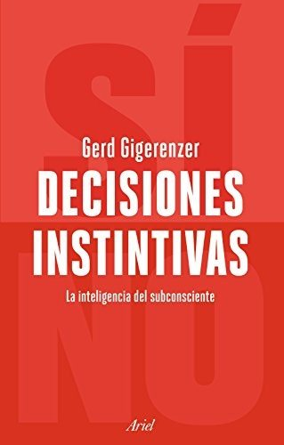
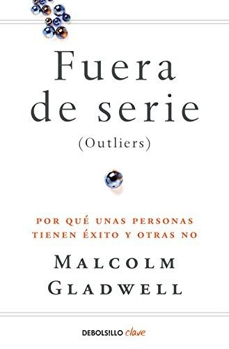
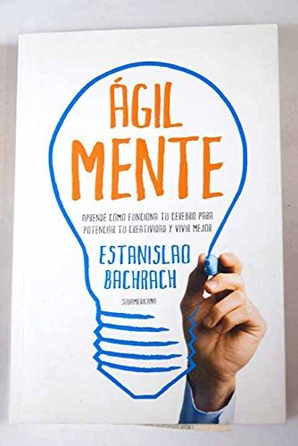
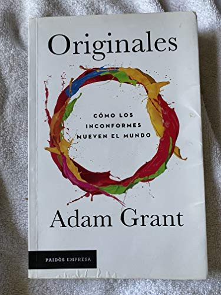
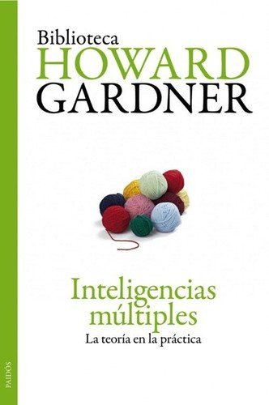

Libros de inteligencia, creatividad y capacidades humanas
Libros de inteligencia, creatividad y capacidades humanas en español: 16 libros completos para leer gratis aquí mismo y 9 fichas de títulos actuales.
La diversidad educativa en el desarrollo socioemocional: inteligencia emocional y altas capacidadesGallego Álvarez, Teresa; Recio Moreno, David; González Yubero, Sara
La diversidad educativa en el desarrollo socioemocional: inteligencia emocional y altas capacidadesGallego Álvarez, Teresa; Recio Moreno, David; González Yubero, SaraInteligencia emocional en entornos educativos: evidencias científicasSanchez-Gomez, Martin; BRESO, EDGAR; Adelantado-Renau, Mireia
Inteligencia emocional en entornos educativos: evidencias científicasSanchez-Gomez, Martin; BRESO, EDGAR; Adelantado-Renau, MireiaLa realidad como misterio : elogio del asombro, la admiración, la búsqueda y la creatividadSimons Camino, Alberto
La realidad como misterio : elogio del asombro, la admiración, la búsqueda y la creatividadSimons Camino, AlbertoInteligencia emocional. Reconceptualización de la inteligencia y una carrera hacia el éxitoLaura Elescano, Luz
Inteligencia emocional. Reconceptualización de la inteligencia y una carrera hacia el éxitoLaura Elescano, LuzNuestros niños son talentosos : como reconocer y desarrollar sus talentos. Manual para padres y maestrosMönks, Franz J.; Ypenburg, Irene H.; Blumen, Sheyla
Nuestros niños son talentosos : como reconocer y desarrollar sus talentos. Manual para padres y maestrosMönks, Franz J.; Ypenburg, Irene H.; Blumen, SheylaReglas y consejos sobre investigación científica (Los tónicos de la voluntad)Santiago Ramón y Cajal
Reglas y consejos sobre investigación científica (Los tónicos de la voluntad)Santiago Ramón y CajalExamen de ingenios para las cienciasJuan Huarte de San Juan
Examen de ingenios para las cienciasJuan Huarte de San JuanIdentificación e intervención de las Altas Capacidades en el aula: Una propuesta psicoeducativa dirigida a la persona docente en el marco educativo costarricenseParedes Quesada, Ivana
Identificación e intervención de las Altas Capacidades en el aula: Una propuesta psicoeducativa dirigida a la persona docente en el marco educativo costarricenseParedes Quesada, IvanaInteligencia emocional, febrero 2019Cabero Jounou, Mireia
Inteligencia emocional, febrero 2019Cabero Jounou, MireiaPensamiento multilateral: Desarrolle su creatividad y mejore la toma de decisionesCorrea Arango, Diego León; Vásquez Pulgarín, Luis Alfonso
Pensamiento multilateral: Desarrolle su creatividad y mejore la toma de decisionesCorrea Arango, Diego León; Vásquez Pulgarín, Luis AlfonsoCreatividad e innovación, febrero 2017Baldovi Borras, Pbaldovi
Creatividad e innovación, febrero 2017Baldovi Borras, PbaldoviCreatividad y MindfulnessVázquez-Medel, Manuel Ángel
Creatividad y MindfulnessVázquez-Medel, Manuel ÁngelPsicología del pensamientoFernando Gabucio Cerezo, Josep Maria Domingo Curto, Fanny Lichtenstein Tiviroli y otros
Psicología del pensamientoFernando Gabucio Cerezo, Josep Maria Domingo Curto, Fanny Lichtenstein Tiviroli y otrosEl buen trato con la infancia. ¿Cómo lo vemos?. Desde la psicología, la salud, la comunicación a la creatividad gráficaAcosta Naranjo, Enrique; Gómez de Terreros, Ignacio; Esteban Arbués, Andrés; Ruiz-de-Lacanal, María-Dolores; Blázquez-Pacheco, Diego; Hernández Rey, José Miguel
El buen trato con la infancia. ¿Cómo lo vemos?. Desde la psicología, la salud, la comunicación a la creatividad gráficaAcosta Naranjo, Enrique; Gómez de Terreros, Ignacio; Esteban Arbués, Andrés; Ruiz-de-Lacanal, María-Dolores; Blázquez-Pacheco, Diego; Hernández Rey, José MiguelEvaluación y potenciación psicopedagógica de los talentos y habilidades excepcionales de los niños y niñas que en las comunas de Medellín están en alto riesgo de ser asimilados por grupos violentosCorrea Uribe, Santiago; Díaz Monsalve, Ana Elsy; Quiroz Posada, Ruth Elena; Betancur, Horacio; Bedoya, Lorena; Gutiérrez, Natalia
Evaluación y potenciación psicopedagógica de los talentos y habilidades excepcionales de los niños y niñas que en las comunas de Medellín están en alto riesgo de ser asimilados por grupos violentosCorrea Uribe, Santiago; Díaz Monsalve, Ana Elsy; Quiroz Posada, Ruth Elena; Betancur, Horacio; Bedoya, Lorena; Gutiérrez, NataliaLos simuladores del talento en las luchas por la personalidad y la vidaJosé María Ramos Mejía
Los simuladores del talento en las luchas por la personalidad y la vidaJosé María Ramos MejíaLa trampa de la inteligenciaDavid Robson
La trampa de la inteligenciaDavid RobsonDecisiones instintivasGerd Gigerenzer
Decisiones instintivasGerd Gigerenzer
Fuera de serieMalcolm Gladwell
Fuera de serieMalcolm Gladwell
ÁgilMenteEstanislao Bachrach
ÁgilMenteEstanislao Bachrach
OriginalesAdam Grant
OriginalesAdam Grant
Inteligencias múltiplesHoward Gardner
Inteligencias múltiplesHoward Gardner
Grit. El poder de la pasión y la perseveranciaAngela Duckworth
Grit. El poder de la pasión y la perseveranciaAngela DuckworthInteligencia emocionalDaniel Goleman
Inteligencia emocionalDaniel GolemanPensar rápido, pensar despacioDaniel Kahneman
Pensar rápido, pensar despacioDaniel KahnemanTemas relacionados
¿Estás eligiendo carrera?
Haz gratis el test de orientación vocacional de AURZANE: intereses, aptitudes, autoconcepto y hábitos de estudio, con informe completo.